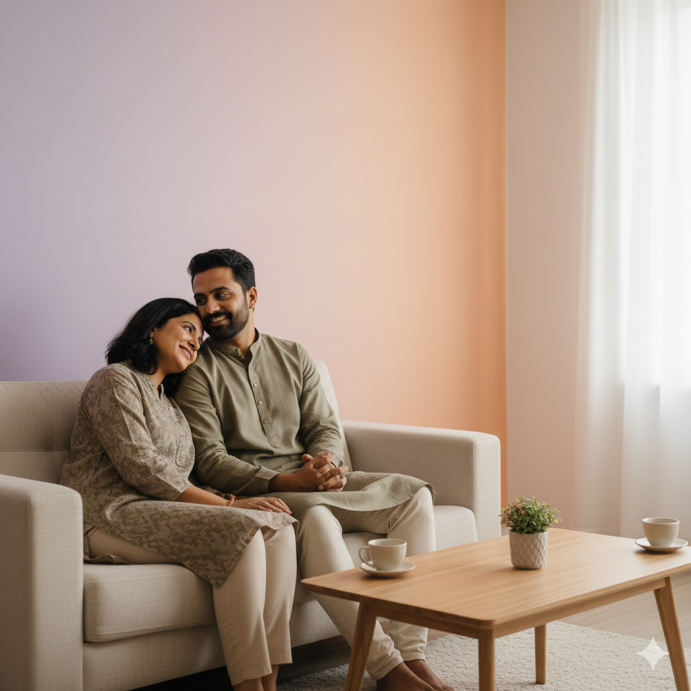

Online marriage counselling, approached with care and clarity
If conversations are turning into repeated arguments or distance, therapy offers a structured, calm space to understand what is happening and how to move forward.
You will be working directly with Ashwini Rao, counselling psychologist with over 8 years of experience.
All sessions are conducted online. Available across India and for Indians living abroad.
Chat on WhatsAppStart with a simple conversation. Share your situation and understand if this approach is suitable for you.
We take on a limited number of clients, based on where we believe we can offer meaningful support.
You will be working with Ashwini
Ashwini Rao is a counselling psychologist with over 8 years of experience, working with individuals and couples within the Indian context.
She holds an M.Phil. in Psychology and works with relationship concerns, communication difficulties, emotional distance, trust issues, and family transitions.
Her approach is calm, structured, and grounded. The focus is not on assigning blame, but on helping both individuals understand what is happening and how to move forward with clarity.
A simpler way to begin
You don’t need to fill out long forms or go through multiple therapist profiles.
You can start with a WhatsApp conversation, briefly share what you are going through, and have a short interaction to understand if this process will be useful for you.
If it feels like the right fit, you can proceed with booking a session.
What this process focuses on
The work focuses on understanding patterns, improving communication, and building a more stable way of relating to each other.
Want to understand if this is right for you?
You can start with a simple conversation. Share your situation, ask your questions, and take a call on whether to proceed.
Chat on WhatsApp